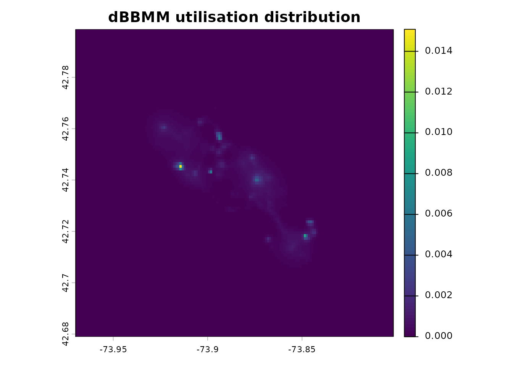
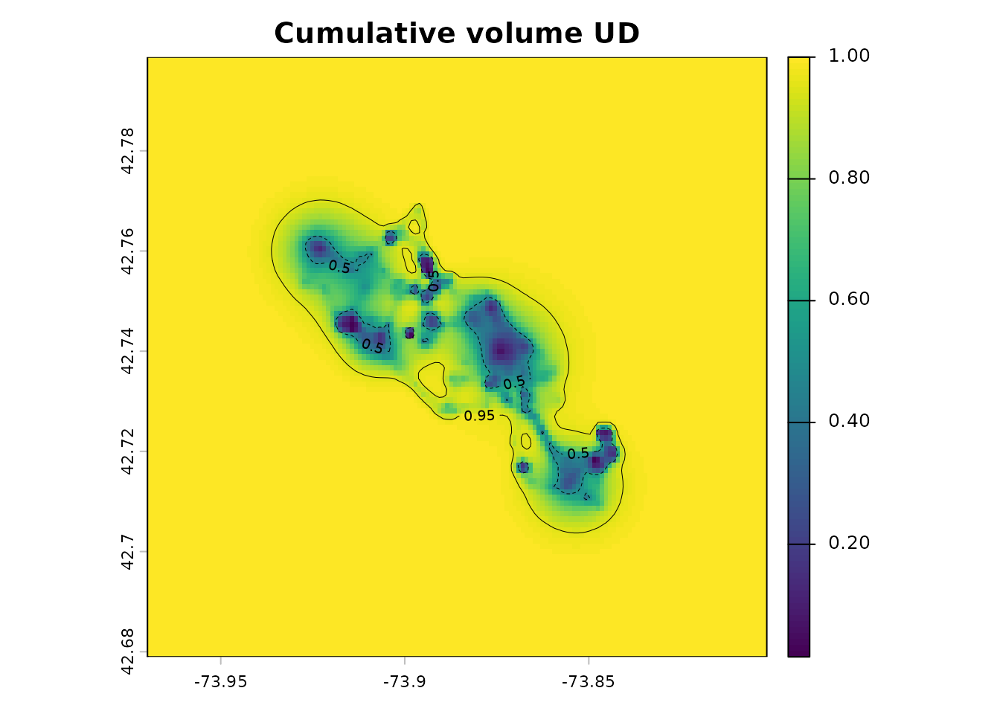
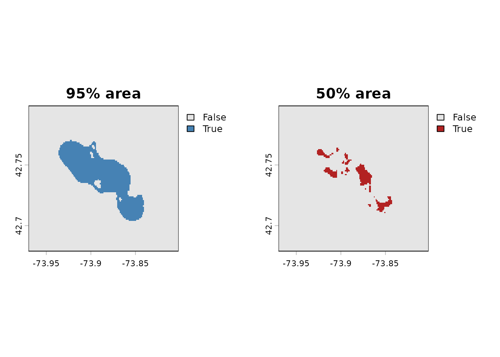
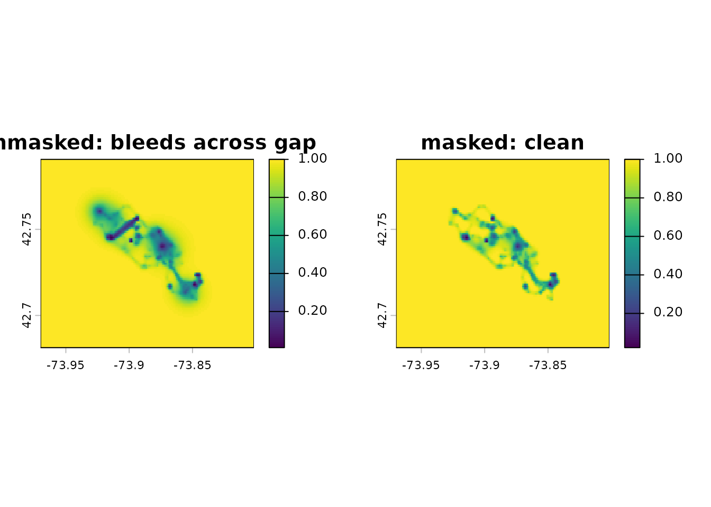

Here we present a workflow for the calculation of dynamic Brownian
bridge movement models (dBBMM) and UDs. We have updated the dBBMM
related functions from the move package to use
move2, sf and terra, and in the
process also improved the algorithm which is now much faster. If you
have migrated from move, the translation is:
legacy move
|
move2utils |
|---|---|
spTransform(x, center = TRUE) |
not needed — any CRS works (optionally
sf::st_transform(x, move2::mt_aeqd_crs(x)) for a metric
grid) |
brownian.motion.variance.dyn() |
mt_dbbmm_variance() |
brownian.bridge.dyn() |
mt_dbbmm_ud() (or the two-step variance → UD) |
getMotionVariance() |
mt_motion_variance() |
getVolumeUD() |
ud_volume() (or the inline recipe shown below) |
There are two main functions in the workflow:
mt_dbbmm_variance() estimates a dynamic Brownian-motion
variance per location, and mt_dbbmm_ud() rasterises the
bridge-weighted UD on a common grid.
Load a track
library(move2)
library(sf)
library(dplyr)
library(terra)
library(move2utils)
## get move2 example data set: fishers GPS data
fishers <- mt_read(mt_example())
fishers <- fishers[!st_is_empty(fishers), ]
## Leroy (M1); keep the first few hundred
## locations so the vignette builds quickly
leroy <- filter_track_data(fishers, .track_id = "M1")
leroy <- slice(leroy,1:500)
## mt_dbbmm_variance() and mt_dbbmm_ud() accept a track in any CRS and
## return the UD in that same CRS, so we pass this lon/lat track straight
## in. (The bridge math runs internally in a local equal-area projection;
## if you would rather work on a metric grid yourself, project first with
## st_transform(leroy, mt_aeqd_crs(leroy)) and the UD comes back in it.)
nrow(leroy)
#> [1] 500Fit a dBBMM
The two-step workflow separates variance estimation from UD
rasterisation so that you can reuse the variance object when tuning the
grid. Pass location_error in map units (metres here);
window size and margin control the sliding estimator (see
?mt_dbbmm_variance). Note that in most cases different
values of window size and the margin do not have a great effect on the
results.
var_obj <- mt_dbbmm_variance(
leroy,
location_error = 20,
window_size = 31,
margin = 11
)
#> Input is in longitude/latitude. Auto-projecting to a local AEQD CRS for dynamic Brownian-bridge variance estimation; distances and variances are in metres.
## a numeric vector of per-location variances (NA at track margins)
head(mt_motion_variance(var_obj))
#> [1] NA NA NA NA NA NARasterise the UD. There are two options, either set the cell size of
the raster, e.g. raster = 100 requests a 100 m cell size;
or pass a pre-made SpatRaster when you need UDs from
different tracks on a shared grid.
ud <- mt_dbbmm_ud(var_obj, location_error = 20, raster = 100)
#> Computational size: 3.2e+08
terra::plot(ud, main = "dBBMM utilisation distribution")
The single-step shortcut
mt_dbbmm_ud(leroy, location_error = 20) fits the variance
internally — convenient when you do not need the variance object
itself.
The sum of all pixels of the dBBMM UD raster sum up to 1. Plotting the result provides limited visual information, as the values correspond to the probability the animal was present in a given pixel during the observed period. These results can be used to estimate probability of the animal being present in a certain area during the tracking period (see ‘Cumulative-volume UD’ section), or to calculate the probability of the animal being present in a certain environment during the tracking period by overlaying the resulting raster over a categorical raster (e.g. of land cover) and summing up the dBBMM pixel values that fall within each category.
Cumulative-volume UD and isopleths
ud_volume() converts a UD into cumulative-probability
space, which represents the minimum area in which an animal has some
specified probability of being located. (This is the move2
analogue of move::getVolumeUD().)
vud <- ud_volume(ud)
terra::plot(vud, main = "Cumulative volume UD")
terra::contour(vud, levels = c(0.5, 0.95), add = TRUE,
lty = c(2, 1), lwd = c(0.5, 0.5))
Solid 50 % and 95 % masks are simple logical operations on the volume UD:
ud50 <- vud <= 0.50
ud95 <- vud <= 0.95
par(mfrow = c(1, 2))
terra::plot(ud95, main = "95% area", col = c("grey90", "steelblue"))
terra::plot(ud50, main = "50% area", col = c("grey90", "firebrick"))
If you need the isopleth as a vector (line or polygon),
terra’s own as.contour() returns a
SpatVector that coerces cleanly to sf:
iso95 <- terra::as.contour(vud, levels = 0.95) |>
sf::st_as_sf()Handling gaps and the time-step pitfall
Choose a sensible time_step
mt_dbbmm_ud() integrates the Brownian bridge along each
segment. The step defaults to 1/15 of the smallest time lag in the
track, which keeps the quadrature stable for short segments. Inspect
your time lags before fitting so you know what you’re working with:
lags <- as.numeric(mt_time_lags(leroy, units = "min"))
summary(lags)
#> Min. 1st Qu. Median Mean 3rd Qu. Max. NAs
#> 13.27 14.73 15.05 33.94 15.49 976.70 1If you have a track with a median lag much larger than the minimum,
and very few short lags, you can override
time_step = median(lags)/15 to speed things up; but keep
the smallest lag governing the step when short segments carry
real information about rapid movement.
Do not bridge across long gaps
A missing satellite pass leaves a long time lag between otherwise adjacent fixes. Integrating the bridge across that gap smears probability across regions the animal never visited. The fix is to mark those locations as “not of interest” in the variance object before rasterising; the UD integration will skip them.
We remove a block of fixes to open up one long (~26 h) gap. Leroy’s first 500 fixes also already contain several natural overnight gaps, so masking every segment longer than 300 minutes cleans all of them at once — the injected gap included. Compare the UD with and without the mask:
## remove a block of fixes to open a long (~26 h) gap
keep <- setdiff(seq_len(nrow(leroy)), 200:260)
leroy_gap <- leroy[keep, ]
var_gap <- mt_dbbmm_variance(
leroy_gap, location_error = 20,
window_size = 31, margin = 11
)
#> Input is in longitude/latitude. Auto-projecting to a local AEQD CRS for dynamic Brownian-bridge variance estimation; distances and variances are in metres.
## the UD with no gap masking — probability bleeds across the gap
ud_bleed <- mt_dbbmm_ud(var_gap, location_error = 20, raster = 100,
verbose = FALSE)
## mask out locations whose following segment exceeds 300 minutes
lag_gap <- as.numeric(mt_time_lags(leroy_gap, units = "min"))
var_gap$interest[which(lag_gap > 300)] <- FALSE
ud_masked <- mt_dbbmm_ud(var_gap, location_error = 20, raster = 100,
verbose = FALSE)
## for better visualization plotting the cumulative volume UD
par(mfrow = c(1, 2))
terra::plot(ud_volume(ud_bleed), main = "unmasked: bleeds across gap")
terra::plot(ud_volume(ud_masked), main = "masked: clean")
The difference is usually visible as a low-density ribbon connecting the two sub-tracks; masking removes it.
Multi-individual UDs on a common grid
Both mt_dbbmm_variance() and mt_dbbmm_ud()
dispatch on multi-track move2 objects: they return a named
list of variance objects and a multi-layer SpatRaster
respectively, all on a grid computed from the combined extent so that
layers are directly comparable.
three <- fishers[mt_track_id(fishers) %in% c("F1", "F2", "M1"), ]
## multi-track input is auto-projected to one shared local grid and the
## stack is returned in the input CRS (here lon/lat)
stk <- mt_dbbmm_ud(three, location_error = 25,
window_size = 31, margin = 11)
names(stk)
terra::plot(stk)Persistence
The package does not ship its own IO helpers — the sf
and terra ecosystems already provide every format the
legacy move vignette covered (shapefile, GeoTIFF,
GeoPackage, KML, CSV).
saveRDS(var_obj, "leroy_dbbmm_variance.rds")
terra::writeRaster(ud, "leroy_ud.tif", overwrite = TRUE)
sf::st_write(leroy, "leroy.gpkg", delete_layer = TRUE)Further reading
-
vignette("UD_dbgb_ud", package = "move2utils")— the Directional UDs with the dynamic bivariate Gaussian bridge (dBGB). -
vignette("UD_bursted_uds", package = "move2utils")— producing dBBMM and dBGB UDs per behavioural or temporal segment per individual. -
vignette("UD_gap_aware_ud", package = "move2utils")— excluding long-gap segments from dBBMM/dBGB -
vignette("UD_ud_comparison", package = "move2utils")— comparing UDs, stacking on a common grid, computing an overlap metric, and computing Earth-mover’s distance (EMD). - Kranstauber, B., Kays, R., LaPoint, S. D., Wikelski, M., & Safi, K. (2012). A dynamic Brownian bridge movement model to estimate utilization distributions for heterogeneous animal movement. Journal of Animal Ecology, 81(4), 738–746.